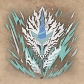
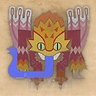
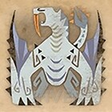
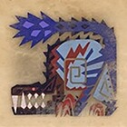

| 색 | 효과 | 시간 |
|---|---|---|
 |
공격 모션 강화 | 90초 |
 |
이동 속도 상승, 점프 고도 상승 | 120초 |
| 공격 중 슈퍼 아머 | 150초 | |
 |
회수 시 체력 회복 | 90초 |
|
|
공격력 1.1배 | |
|
|
방어력 1.1배, 아머효과 | |
|
|
공격력 1.15배, 방어력 1.1배, 아머효과 | 90초 시간 추가연장 불가 |
| 공식 유튜브 채널 무기 소개 영상 |
|---|
|
|
| 모션명 | 모션치 | 속성보정 | 계열 |
|---|---|---|---|
| 연속 베어 올리기 | 16 · 14 | 0.7 · 0.8 | 절단 |
| 대각선 베기 | 18 | 0.8 | 절단 |
| 2단 베기 | 18 · 24 | 0.7 · 0.8 | 절단 |
| 뛰어들어 베기 | 26 | 0.8 | 절단 |
| 내려 치기 | 30 | 0.8 | 절단 |
| 찌르기 | 10 | 0.8 | 절단 |
| 후려 치기 | 22 | 0.8 | 절단 |
| 회피 베기 | 17 | 0.81 | 절단 |
| 점프 돌진 베기 | 28 | 1 | 절단 |
| 점프 베기 | 15 | 1 | 절단 |
| 급습 찌르기 | 28 · 42 · 7 · 36 | 1 · 1 · 0 · 1 | 절단 |
| 조충[마크명중] | 5 | 0 | 절단 |
| 탑승 : 날아 이동 베기 | 8 · 4 · 4 · 8 | 1 | 절단 |
| 탑승 : 연속베기 (머리) | 13 · 13 · 5 · 32 | 1 | 절단 |
| 탑승 : 연속베기 (머리 외) | 13 · 13 · 5 · 5 · 32 | 1 | 절단 |
| 클러치클로 | 8 | 0 | 절단 |
| 공중 클러치클로 | 8 | 0 | 절단 |
| 클로공격 | 8 | 0 | 절단 |
| 무기공격 | 14 · 15 · 15 · 18 · 32 | 0.7 · 0.7 · 0.7 · 0.7 · 1 | 절단 |
| 모션명 | 모션치 | 속성보정 | 계열 |
|---|---|---|---|
| 강화 연속 베어 올리기 | 16 · 14 · 15 | 0.8 | 절단 |
| 강화 대각선 베기 | 15 · 19 | 0.8 | 절단 |
| 강화 2단 베기 | 16 · 14 · 28 | 0.6 · 0.8 · 0.8 | 절단 |
| 날아들어 베기 | 26 | 0.8 | 절단 |
| 비원 베기 | 24 · 42 | 0.8 | 절단 |
| 강화 찌르기 | 12 · 11 | 0.8 | 절단 |
| 강화 후려 치기 | 18 · 22 | 0.8 | 절단 |
| 강화 후려 치기 후 베어 올리기 | 10 · 16 · 14 · 15 | 0.7 · 0.8 · 0.8 · 0.8 | 절단 |
| 회피베기 | 17 | 0.8 | 절단 |
| 강화 점프 돌진 베기 | 6 · 4 · 7 · 4 · 3 · 32 | 0.5 · 0.5 · 0.5 · 0.5 · 0.5 · 1 | 절단 |
| 강화 점프 베기 | 타수 당 8 | 0.6 | 절단 |
| 급습 찌르기 | 28 · 42 · 7 · 36 | 1 · 1 · 0 · 1 | 절단 |
| 조충[마크명중] | 5 | 0 | 절단 |
| 탑승 : 날아 이동 베기 | 8 · 4 · 4 · 8 | 1 | 절단 |
| 탑승 : 연속베기 (머리) | 13 · 13 · 5 · 32 | 1 | 절단 |
| 탑승 : 연속베기 (머리 외) | 13 · 13 · 5 · 5 · 32 | 1 | 절단 |
| 클러치클로 | 8 | 0 | 절단 |
| 공중 클러치클로 | 8 | 0 | 절단 |
| 클로공격 | 8 | 0 | 절단 |
| 무기공격 | 14 · 15 · 15 · 18 · 32 | 0.7 · 0.7 · 0.7 · 0.7 · 1 | 절단 |
| 색 | 효과 | 시간 |
|---|---|---|
|
공격 모션 강화 | 90초 |
|
이동 속도 상승, 점프 고도 상승 | 120초 |
| 공격 중 슈퍼 아머 | 150초 | |
|
회수 시 체력 회복 | 90초 |
|
|
공격력 1.1배 | |
|
|
방어력 1.1배, 아머효과 | |
|
|
공격력 1.15배, 방어력 1.1배, 아머효과 | 90초 시간 추가연장 불가 |
| 명칭 | 설명 |
|---|---|
| 속성 | 레벨이 오를 수록 조충공격의 속성치가 상승 |
| 파워 | 레벨이 오를 수록 조충공격의 모션치가 상승 |
| 스피드 | 레벨이 오를 수록 조충의 이동속도가 상승 |
| 회복 | 레벨이 오를 수록 조충 스태미나의 시간경과에 따른 회복속도 상승 |
| 레벨 | 회복량 |
|---|---|
| Lv1 | 1 |
| Lv2 | 1 |
| Lv3 | 2 |
| Lv4 | 2 |
| Lv5 | 3 |
| Lv6 | 3 |
| Lv7 | 4 |
| Lv8 | 4 |
| Lv9 | 5 |
| Lv10 | 5 |
| Lv11 | 6 |
| Lv12 | 6 |
| Lv13 | 7 |
| Lv14 | 7 |
| Lv15 | 8 |
| Lv16 | 8 |
| Lv17 | - |
| Lv18 | 9 |
| Lv19 | - |
| Lv20 | 10 |
| 레벨 | 모션치 | 속성치 |
|---|---|---|
| Lv1 | 4 | 80 |
| Lv2 | 5 | |
| Lv3 | 7 | 100 |
| Lv4 | 8 | |
| Lv5 | 11 | 120 |
| Lv6 | 12 | 130 |
| Lv7 | 14 | |
| Lv8 | 15 | 150 |
| Lv9 | 16 | 160 |
| Lv10 | 17 | 170 |
| Lv11 | 18 | 180 |
| Lv12 | 20 | 190 |
| Lv13 | 22 | 200 |
| Lv14 | 23 | 210 |
| Lv15 | 25 | 230 |
| Lv16 | 27 | 250 |
| Lv17 | 28 | |
| Lv18 | 29 | 280 |
| Lv19 | 31 | |
| Lv20 | 34 | 350 |
| 고정 데미지 | 효과 | |
|---|---|---|
| 독 | 5 | 독 축적 |
| 마비 | 3 | 마비 축적 |
| 폭파 | 10 | 폭파 축적 |
| 회복 | 0 | 주변 헌터의 체력 회복 |
| 명칭 | 효과 |
|---|---|
| 공격강화[절단] | 공격계통 절단인 조충공격의 물리데미지 1.3배 |
| 공격강화[타격] | 공격계통 타격인 조충공격의 물리데미지 1.2배 |
| 공격강화[속성] | 조충의 속성 데미지 1.4배 |
| 스피드강화 | 조충의 이동속도 상승 |
| 회복강화[체력] | 초록색 진액에 따른 회복량 1.5배 |
| 회복강화[스태미나] |
사냥벌레 활동중 스태미나 감소속도 반으로 줄어듦 사냥벌레 미사용 중 스태미나 회복량 배로 증가 사냥벌레 회수 시 스태미나 회복량 50 |
| 사냥벌레 강화[기 · 힘] 발동 | 사냥벌레 강화 발동 시 사냥벌레 강화[기]와 사냥벌레 강화[힘] 양방향 발동 |
| 강화 | 효과 | 슬링어 | 효과시간 | 아이콘 |
|---|---|---|---|---|
| 기 |
빨강, 흰색, 주황 3색 진액의 효과시간이 45초 연장 사냥벌레 스태미나가 200으로 증가 |
돌멩이 | 75초 | |
| 짱돌열매 | 90초 | |||
| 펑펑호두 | 120초 | |||
| 툭툭결정 | 120초 | |||
| 슬링어횃불탄 | 120초 | |||
| 발광이끼 | 120초 | |||
| 슬링어수류탄 | 150초 | |||
| 힘 |
사냥벌레의 공격에 의한 물리데미지 1.5배, 속성 3.5배 보정 추가 진액을 묻힌 경우에 사냥벌레의 공격간격 단축 |
슬링어멸룡탄 | 150초 | |
| 슬링어폭발탄 | 300초 | |||
| 슬링어관통탄 | 300초 | |||
| 슬링어착격탄 | 300초 |
| 몬스터 | 진액정보 | 몬스터 | 진액정보 | 몬스터 | 진액정보 | ||||||||||||||||||
|---|---|---|---|---|---|---|---|---|---|---|---|---|---|---|---|---|---|---|---|---|---|---|---|
| 도스쟈그라스 |
|
|
|
||||||||||||||||||||
|
|
|
|||||||||||||||||||||
|
|
치치야크 |
|
||||||||||||||||||||
| 파오우르무 |
|
도스기르오스 |
|
라도발킨 |
|
||||||||||||||||||
|
오도가론 |
|
리오레우스 |
|
|||||||||||||||||||
| 디아블로스 |
|
키린 |
|
도도가마루 |
|
||||||||||||||||||
| 리오레이아 아종 |
|
바젤기우스 |
|
볼가노스 |
|
||||||||||||||||||
| 우라간킨 |
|
리오레우스 아종 |
|
디아블로스 아종 |
|
||||||||||||||||||
|
테오테스카토르 |
|
크샬다오라 |
|
|||||||||||||||||||
| 발하자크 |
|
제노지바 |
|
이블조 |
|
||||||||||||||||||
| 나나테스카토리 |
|
베히모스 |
|
고대레셴 |
|
||||||||||||||||||
| 맘타로트 |
|
브란토도스 |
|
버프바로 |
|
||||||||||||||||||
| 토비카가치아종 |
|
파오우르무아종 |
|
푸케푸케 아종 |
|
||||||||||||||||||
| 벨리오로스 |
|
나르가쿠르가 |
|
디노발드 |
|
||||||||||||||||||
|
|
얼려 찌르는 레이기에나 |
|
||||||||||||||||||||
| 안쟈나프 아종 |
|
디노발드 아종 |
|
오도가론 아종 |
|
||||||||||||||||||
| 이베르카나 |
|
홍련의 솟구치는 바젤기우스 |
|
죽음을 두른 발하자크 |
|
||||||||||||||||||
| 네로미에르 |
|
미친이블조 |
|
모두를 멸하는 네르기간테 |
|
||||||||||||||||||
| 안-이슈왈다 |
|
진오우거 |
|
얀가루루가 |
|
||||||||||||||||||
희소종 |
|
리오레우스 희소종 |
|
상처입은 얀가루루가 |
|
||||||||||||||||||
| 티가렉스 아종 |
|
라잔 |
|
진오우거 아종 |
|
||||||||||||||||||
| 무페토-지바 |
|
|
|